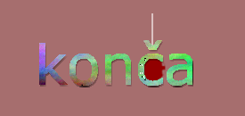
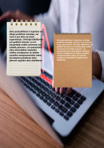

Attēlu apstrāde
Šajā periodā apguvām attēlu veidošanu un rediģēšanu divās dažādās programmās — GIMP rastrgrafikas stilā un Inkscape vektorgrafikas stilā. Rastrgraifka nozīmē, ka attēls veidots no pikseļiem, savukārt vektorgrafika — no matemātiskām formām, kas ļauj to palielināt bez kvalitātes zuduma. Apguvām veidot attēlus rastrgrafikas un vektorgrafikas stilā, un bija uzdevums izveidot kādam uzņēmumam logo. Strādājām grupās un izvēlējāmies uzņēmumu, kuram izstrādājām vizuālo identitāti — logo, krāsu paleti un stilu.

Logo, izveidots Inkscape

Attēls, izveidots GIMP
Vēlāk veidojām arī plakātu par tēmu "Kā samazināt risku zaudēt datus?". Šis uzdevums ļāva apvienot grafiskā dizaina prasmes ar saturīgu informāciju par datu drošību. Plakāts tika veidots GIMP programmā.
